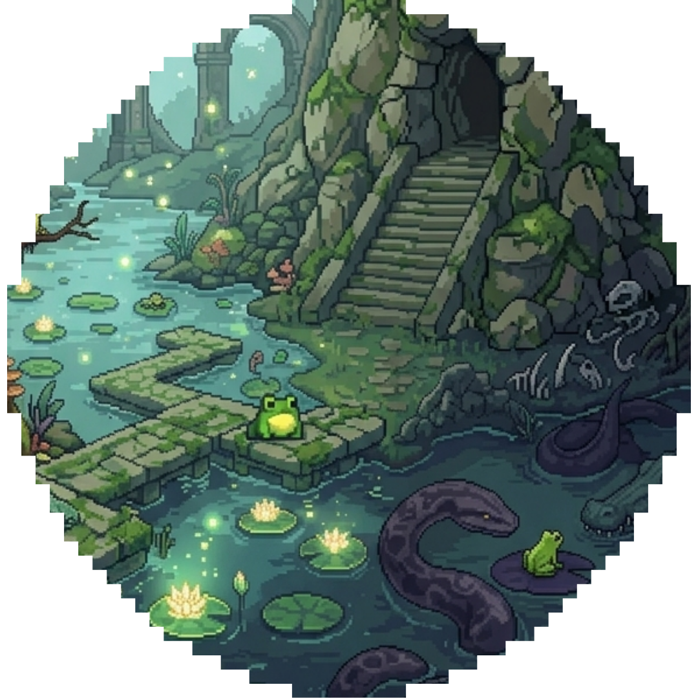
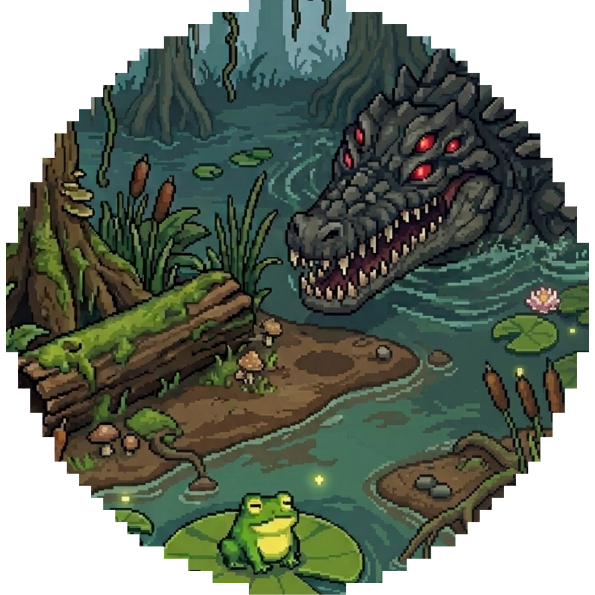

The world of Anura
Deep in a mysterious swamp, a small frog finds itself at the bottom of the food chain. The environment shifts between calm, humid platforming sections filled with fireflies and lily pads, and dark tense predator arenas where the atmosphere turns heavy and isolated. The world is cute but deadly.


At the start of each run, the frog feels vulnerable and fragile. Enemies are intimidating in size and presence. But between boss encounters, the swamp feels cozy and atmospheric — a peaceful exploration that reinforces a false sense of safety. That calm is always disrupted. The intended experience is to make you think: "I'm just a cute little frog in a peaceful swamp" — right before a 1v1 fight forces you to adapt or die.